Chapter 13 Overview
TODO: Move current content into the following placeholder chapters. Add details.
13.1 Methods
13.1.1 Principal Component Analysis
To perform PCA in R we will use prcomp(). See ?prcomp() for details.
13.1.2 \(k\)-Means Clustering
To perform \(k\)-means in R we will use kmeans(). See ?kmeans() for details.
13.1.3 Hierarchical Clustering
To perform hierarchical clustering in R we will use hclust(). See ?hclust() for details.
13.2 Examples
13.2.1 US Arrests
library(ISLR)
data(USArrests)
apply(USArrests, 2, mean)## Murder Assault UrbanPop Rape
## 7.788 170.760 65.540 21.232apply(USArrests, 2, sd)## Murder Assault UrbanPop Rape
## 4.355510 83.337661 14.474763 9.366385“Before” performing PCA, we will scale the data. (This will actually happen inside the prcomp() function.)
USArrests_pca = prcomp(USArrests, scale = TRUE)A large amount of information is stored in the output of prcomp(), some of which can neatly be displayed with summary().
names(USArrests_pca)## [1] "sdev" "rotation" "center" "scale" "x"summary(USArrests_pca)## Importance of components%s:
## PC1 PC2 PC3 PC4
## Standard deviation 1.5749 0.9949 0.59713 0.41645
## Proportion of Variance 0.6201 0.2474 0.08914 0.04336
## Cumulative Proportion 0.6201 0.8675 0.95664 1.00000USArrests_pca$center## Murder Assault UrbanPop Rape
## 7.788 170.760 65.540 21.232USArrests_pca$scale## Murder Assault UrbanPop Rape
## 4.355510 83.337661 14.474763 9.366385USArrests_pca$rotation## PC1 PC2 PC3 PC4
## Murder -0.5358995 0.4181809 -0.3412327 0.64922780
## Assault -0.5831836 0.1879856 -0.2681484 -0.74340748
## UrbanPop -0.2781909 -0.8728062 -0.3780158 0.13387773
## Rape -0.5434321 -0.1673186 0.8177779 0.08902432We see that $center and $scale give the mean and standard deviations for the original variables. $rotation gives the loading vectors that are used to rotate the original data to obtain the principal components.
dim(USArrests_pca$x)## [1] 50 4dim(USArrests)## [1] 50 4head(USArrests_pca$x)## PC1 PC2 PC3 PC4
## Alabama -0.9756604 1.1220012 -0.43980366 0.154696581
## Alaska -1.9305379 1.0624269 2.01950027 -0.434175454
## Arizona -1.7454429 -0.7384595 0.05423025 -0.826264240
## Arkansas 0.1399989 1.1085423 0.11342217 -0.180973554
## California -2.4986128 -1.5274267 0.59254100 -0.338559240
## Colorado -1.4993407 -0.9776297 1.08400162 0.001450164The dimension of the principal components is the same as the original data. The principal components are stored in $x.
scale(as.matrix(USArrests))[1, ] %*% USArrests_pca$rotation[, 1]## [,1]
## [1,] -0.9756604scale(as.matrix(USArrests))[1, ] %*% USArrests_pca$rotation[, 2]## [,1]
## [1,] 1.122001scale(as.matrix(USArrests))[1, ] %*% USArrests_pca$rotation[, 3]## [,1]
## [1,] -0.4398037scale(as.matrix(USArrests))[1, ] %*% USArrests_pca$rotation[, 4]## [,1]
## [1,] 0.1546966head(scale(as.matrix(USArrests)) %*% USArrests_pca$rotation[,1])## [,1]
## Alabama -0.9756604
## Alaska -1.9305379
## Arizona -1.7454429
## Arkansas 0.1399989
## California -2.4986128
## Colorado -1.4993407head(USArrests_pca$x[, 1])## Alabama Alaska Arizona Arkansas California Colorado
## -0.9756604 -1.9305379 -1.7454429 0.1399989 -2.4986128 -1.4993407sum(USArrests_pca$rotation[, 1] ^ 2)## [1] 1USArrests_pca$rotation[, 1] %*% USArrests_pca$rotation[, 2]## [,1]
## [1,] -1.387779e-16USArrests_pca$rotation[, 1] %*% USArrests_pca$rotation[, 3]## [,1]
## [1,] -5.551115e-17USArrests_pca$x[, 1] %*% USArrests_pca$x[, 2]## [,1]
## [1,] -2.062239e-14USArrests_pca$x[, 1] %*% USArrests_pca$x[, 3]## [,1]
## [1,] 5.384582e-15The above verifies some of the “math” of PCA. We see how the loadings obtain the principal components from the original data. We check that the loading vectors are normalized. We also check for orthogonality of both the loading vectors and the principal components. (Note the above inner products aren’t exactly 0, but that is simply a numerical issue.)
biplot(USArrests_pca, scale = 0, cex = 0.5)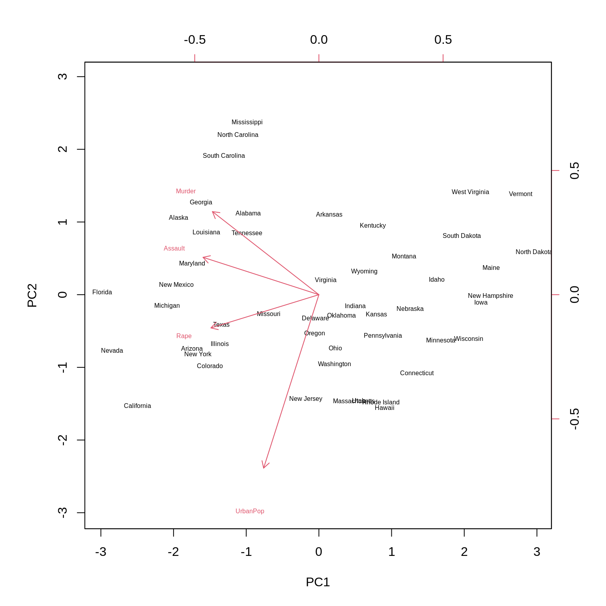
A biplot can be used to visualize both the principal component scores and the principal component loadings. (Note the two scales for each axis.)
USArrests_pca$sdev## [1] 1.5748783 0.9948694 0.5971291 0.4164494USArrests_pca$sdev ^ 2 / sum(USArrests_pca$sdev ^ 2)## [1] 0.62006039 0.24744129 0.08914080 0.04335752Frequently we will be interested in the proportion of variance explained by a principal component.
get_PVE = function(pca_out) {
pca_out$sdev ^ 2 / sum(pca_out$sdev ^ 2)
}So frequently, we would be smart to write a function to do so.
pve = get_PVE(USArrests_pca)
pve## [1] 0.62006039 0.24744129 0.08914080 0.04335752plot(
pve,
xlab = "Principal Component",
ylab = "Proportion of Variance Explained",
ylim = c(0, 1),
type = 'b'
)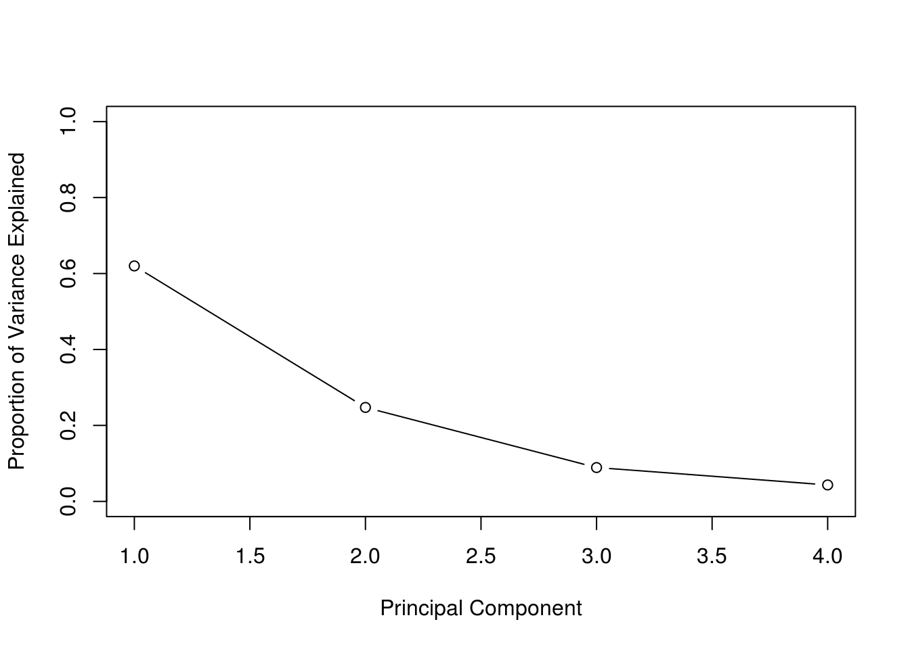
We can then plot the proportion of variance explained for each PC. As expected, we see the PVE decrease.
cumsum(pve)## [1] 0.6200604 0.8675017 0.9566425 1.0000000plot(
cumsum(pve),
xlab = "Principal Component",
ylab = "Cumulative Proportion of Variance Explained",
ylim = c(0, 1),
type = 'b'
)
Often we are interested in the cumulative proportion. A common use of PCA outside of visualization is dimension reduction for modeling. If \(p\) is large, PCA is performed, and the principal components that account for a large proportion of variation, say 95%, are used for further analysis. In certain situations that can reduce the dimensionality of data significantly. This can be done almost automatically using caret:
library(caret)
library(mlbench)
data(Sonar)
set.seed(18)
using_pca = train(Class ~ ., data = Sonar, method = "knn",
trControl = trainControl(method = "cv", number = 5),
preProcess = "pca",
tuneGrid = expand.grid(k = c(1, 3, 5, 7, 9)))
regular_scaling = train(Class ~ ., data = Sonar, method = "knn",
trControl = trainControl(method = "cv", number = 5),
preProcess = c("center", "scale"),
tuneGrid = expand.grid(k = c(1, 3, 5, 7, 9)))
max(using_pca$results$Accuracy)## [1] 0.8656997max(regular_scaling$results$Accuracy)## [1] 0.8609378using_pca$preProcess## Created from 208 samples and 60 variables
##
## Pre-processing:
## - centered (60)
## - ignored (0)
## - principal component signal extraction (60)
## - scaled (60)
##
## PCA needed 30 components to capture 95 percent of the varianceIt won’t always outperform simply using the original predictors, but here using 30 of 60 principal components shows a slight advantage over using all 60 predictors. In other situation, it may result in a large perform gain.
13.2.2 Simulated Data
library(MASS)
set.seed(42)
n = 180
p = 10
clust_data = rbind(
mvrnorm(n = n / 3, sample(c(1, 2, 3, 4), p, replace = TRUE), diag(p)),
mvrnorm(n = n / 3, sample(c(1, 2, 3, 4), p, replace = TRUE), diag(p)),
mvrnorm(n = n / 3, sample(c(1, 2, 3, 4), p, replace = TRUE), diag(p))
)Above we simulate data for clustering. Note that, we did this in a way that will result in three clusters.
true_clusters = c(rep(3, n / 3), rep(1, n / 3), rep(2, n / 3))We label the true clusters 1, 2, and 3 in a way that will “match” output from \(k\)-means. (Which is somewhat arbitrary.)
kmean_out = kmeans(clust_data, centers = 3, nstart = 10)
names(kmean_out)## [1] "cluster" "centers" "totss" "withinss"
## [5] "tot.withinss" "betweenss" "size" "iter"
## [9] "ifault"Notice that we used nstart = 10 which will give us a more stable solution by attempting 10 random starting positions for the means. Also notice we chose to use centers = 3. (The \(k\) in \(k\)-mean). How did we know to do this? We’ll find out on the homework. (It will involve looking at tot.withinss)
kmean_out## K-means clustering with 3 clusters of sizes 61, 60, 59
##
## Cluster means:
## [,1] [,2] [,3] [,4] [,5] [,6] [,7]
## 1 3.997352 4.085592 0.7846534 2.136643 4.059886 3.2490887 1.747697
## 2 1.008138 2.881229 4.3102354 4.094867 3.022989 0.8878413 4.002270
## 3 3.993468 4.049505 1.9553560 4.037748 2.825907 2.9960855 3.026397
## [,8] [,9] [,10]
## 1 1.8341976 0.8193371 4.043725
## 2 3.8085492 2.0905060 0.977065
## 3 0.8992179 3.0041820 2.931030
##
## Clustering vector:
## [1] 3 3 3 3 3 3 3 3 1 3 3 3 3 3 3 3 3 3 3 1 3 3 3 3 3 3 3 3 3 3 3 3 3 3 3
## [36] 3 3 3 3 3 3 3 3 3 3 3 3 3 1 3 3 3 3 3 3 3 3 3 3 3 1 1 1 1 1 1 1 1 1 1
## [71] 1 1 3 1 1 1 1 1 1 1 1 1 1 1 1 1 1 1 1 3 1 1 1 1 1 1 1 1 1 1 1 1 1 1 1
## [106] 1 1 1 1 1 1 1 1 1 1 1 1 1 1 1 2 2 2 2 2 2 2 2 2 2 2 2 2 2 2 2 2 2 2 2
## [141] 2 2 2 2 2 2 2 2 2 2 2 2 2 2 2 2 2 2 2 2 2 2 2 2 2 2 2 2 2 2 2 2 2 2 2
## [176] 2 2 2 2 2
##
## Within cluster sum of squares by cluster:
## [1] 609.2674 581.8780 568.3845
## (between_SS / total_SS = 54.0 %)
##
## Available components:
##
## [1] "cluster" "centers" "totss" "withinss"
## [5] "tot.withinss" "betweenss" "size" "iter"
## [9] "ifault"kmeans_clusters = kmean_out$cluster
table(true_clusters, kmeans_clusters)## kmeans_clusters
## true_clusters 1 2 3
## 1 58 0 2
## 2 0 60 0
## 3 3 0 57We check how well the clustering is working.
dim(clust_data)## [1] 180 10This data is “high dimensional” so it is difficult to visualize. (Anything more than 2 is hard to visualize.)
plot(
clust_data[, 1],
clust_data[, 2],
pch = 20,
xlab = "First Variable",
ylab = "Second Variable"
)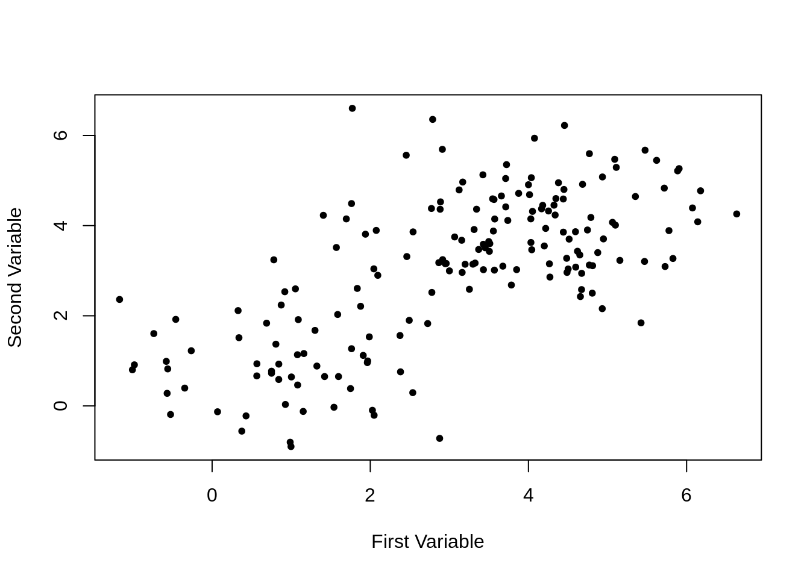
Plotting the first and second variables simply results in a blob.
plot(
clust_data[, 1],
clust_data[, 2],
col = true_clusters,
pch = 20,
xlab = "First Variable",
ylab = "Second Variable"
)
Even when using their true clusters for coloring, this plot isn’t very helpful.
clust_data_pca = prcomp(clust_data, scale = TRUE)
plot(
clust_data_pca$x[, 1],
clust_data_pca$x[, 2],
pch = 0,
xlab = "First Principal Component",
ylab = "Second Principal Component"
)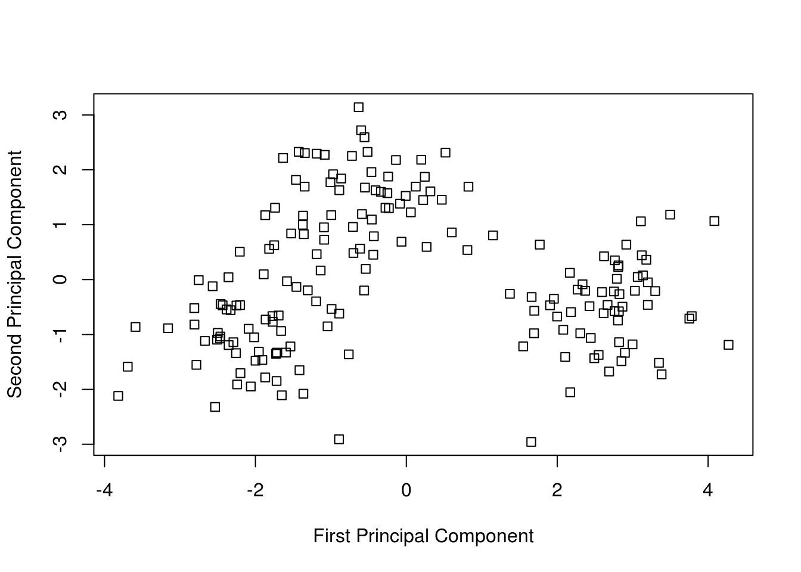
If we instead plot the first two principal components, we see, even without coloring, one blob that is clearly separate from the rest.
plot(
clust_data_pca$x[, 1],
clust_data_pca$x[, 2],
col = true_clusters,
pch = 0,
xlab = "First Principal Component",
ylab = "Second Principal Component",
cex = 2
)
points(clust_data_pca$x[, 1], clust_data_pca$x[, 2], col = kmeans_clusters, pch = 20, cex = 1.5)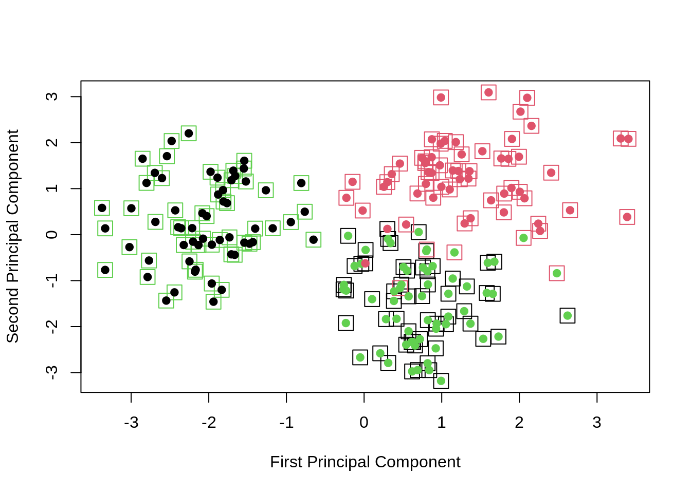
Now adding the true colors (boxes) and the \(k\)-means results (circles), we obtain a nice visualization.
clust_data_pve = get_PVE(clust_data_pca)
plot(
cumsum(clust_data_pve),
xlab = "Principal Component",
ylab = "Cumulative Proportion of Variance Explained",
ylim = c(0, 1),
type = 'b'
)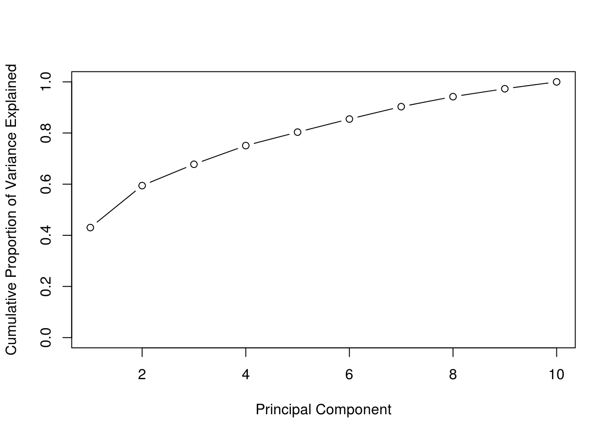
The above visualization works well because the first two PCs explain a large proportion of the variance.
#install.packages('sparcl')
library(sparcl)To create colored dendrograms we will use ColorDendrogram() in the sparcl package.
clust_data_hc = hclust(dist(scale(clust_data)), method = "complete")
clust_data_cut = cutree(clust_data_hc , 3)
ColorDendrogram(clust_data_hc, y = clust_data_cut,
labels = names(clust_data_cut),
main = "Simulated Data, Complete Linkage",
branchlength = 1.5)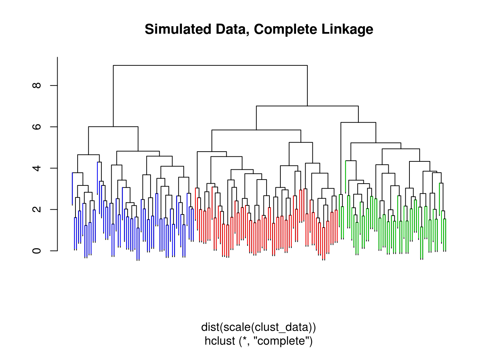
Here we apply hierarchical clustering to the scaled data. The dist() function is used to calculate pairwise distances between the (scaled in this case) observations. We use complete linkage. We then use the cutree() function to cluster the data into 3 clusters. The ColorDendrogram() function is then used to plot the dendrogram. Note that the branchlength argument is somewhat arbitrary (the length of the colored bar) and will need to be modified for each dendrogram.
table(true_clusters, clust_data_cut)## clust_data_cut
## true_clusters 1 2 3
## 1 9 51 0
## 2 1 0 59
## 3 59 1 0We see in this case hierarchical clustering doesn’t “work” as well as \(k\)-means.
clust_data_hc = hclust(dist(scale(clust_data)), method = "single")
clust_data_cut = cutree(clust_data_hc , 3)
ColorDendrogram(clust_data_hc, y = clust_data_cut,
labels = names(clust_data_cut),
main = "Simulated Data, Single Linkage",
branchlength = 0.5)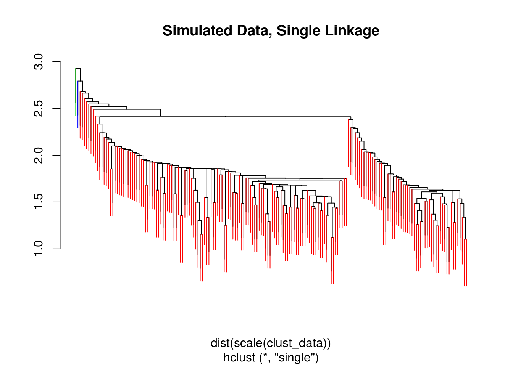
table(true_clusters, clust_data_cut)## clust_data_cut
## true_clusters 1 2 3
## 1 59 1 0
## 2 59 0 1
## 3 60 0 0clust_data_hc = hclust(dist(scale(clust_data)), method = "average")
clust_data_cut = cutree(clust_data_hc , 3)
ColorDendrogram(clust_data_hc, y = clust_data_cut,
labels = names(clust_data_cut),
main = "Simulated Data, Average Linkage",
branchlength = 1)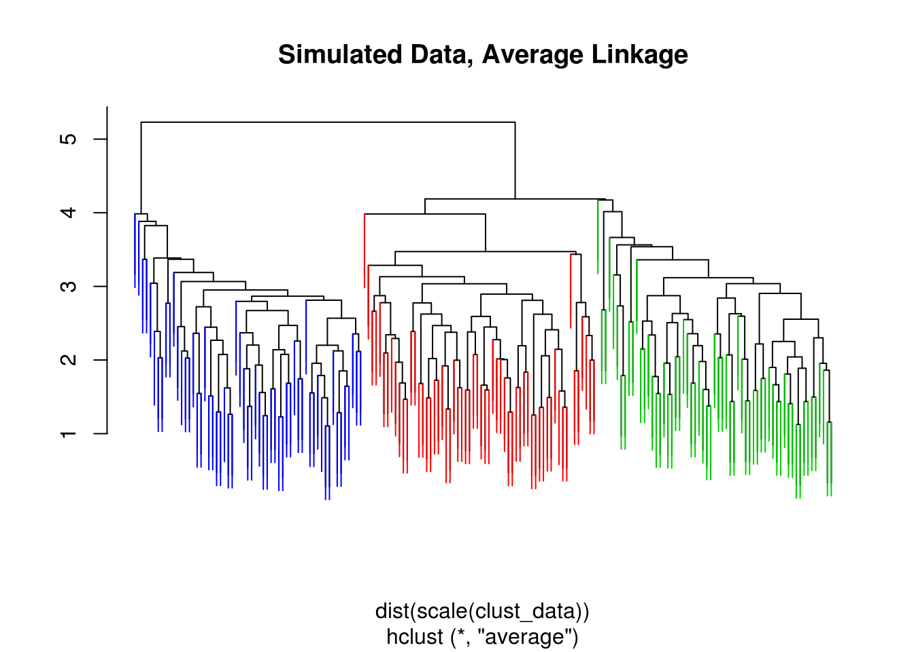
table(true_clusters, clust_data_cut)## clust_data_cut
## true_clusters 1 2 3
## 1 1 59 0
## 2 1 0 59
## 3 58 2 0We also try single and average linkage. Single linkage seems to perform poorly here, while average linkage seems to be working well.
13.2.3 Iris Data
str(iris)## 'data.frame': 150 obs. of 5 variables:
## $ Sepal.Length: num 5.1 4.9 4.7 4.6 5 5.4 4.6 5 4.4 4.9 ...
## $ Sepal.Width : num 3.5 3 3.2 3.1 3.6 3.9 3.4 3.4 2.9 3.1 ...
## $ Petal.Length: num 1.4 1.4 1.3 1.5 1.4 1.7 1.4 1.5 1.4 1.5 ...
## $ Petal.Width : num 0.2 0.2 0.2 0.2 0.2 0.4 0.3 0.2 0.2 0.1 ...
## $ Species : Factor w/ 3 levels "setosa","versicolor",..: 1 1 1 1 1 1 1 1 1 1 ...iris_pca = prcomp(iris[,-5], scale = TRUE)
iris_pca$rotation## PC1 PC2 PC3 PC4
## Sepal.Length 0.5210659 -0.37741762 0.7195664 0.2612863
## Sepal.Width -0.2693474 -0.92329566 -0.2443818 -0.1235096
## Petal.Length 0.5804131 -0.02449161 -0.1421264 -0.8014492
## Petal.Width 0.5648565 -0.06694199 -0.6342727 0.5235971lab_to_col = function (labels){
cols = rainbow (length(unique(labels)))
cols[as.numeric (as.factor(labels))]
}
plot(iris_pca$x[,1], iris_pca$x[,2], col = lab_to_col(iris$Species), pch = 20)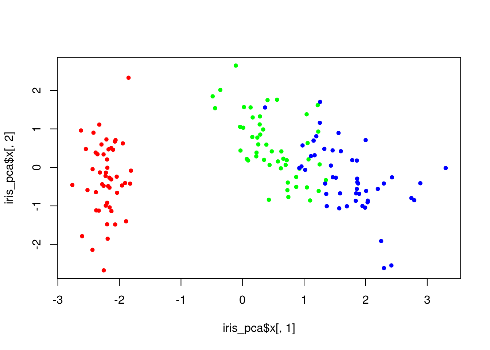
plot(iris_pca$x[,3], iris_pca$x[,4], col = lab_to_col(iris$Species), pch = 20)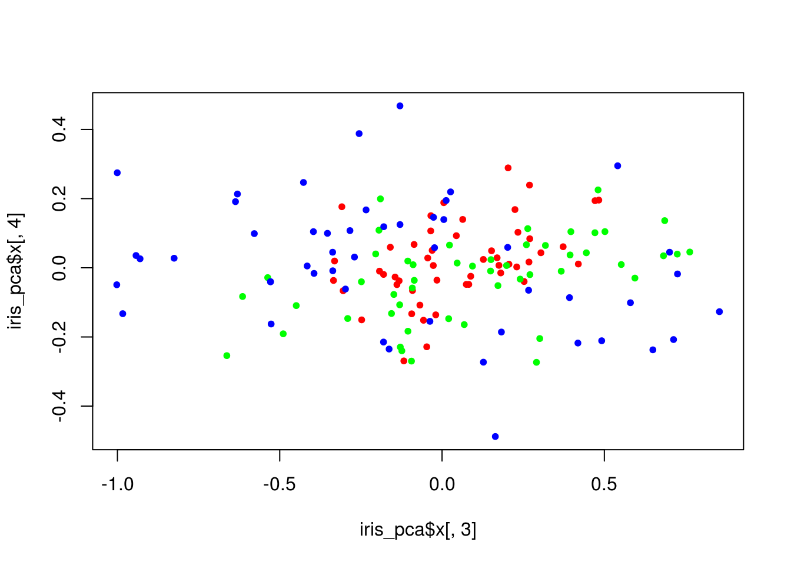
iris_pve = get_PVE(iris_pca)
plot(
cumsum(iris_pve),
xlab = "Principal Component",
ylab = "Cumulative Proportion of Variance Explained",
ylim = c(0, 1),
type = 'b'
)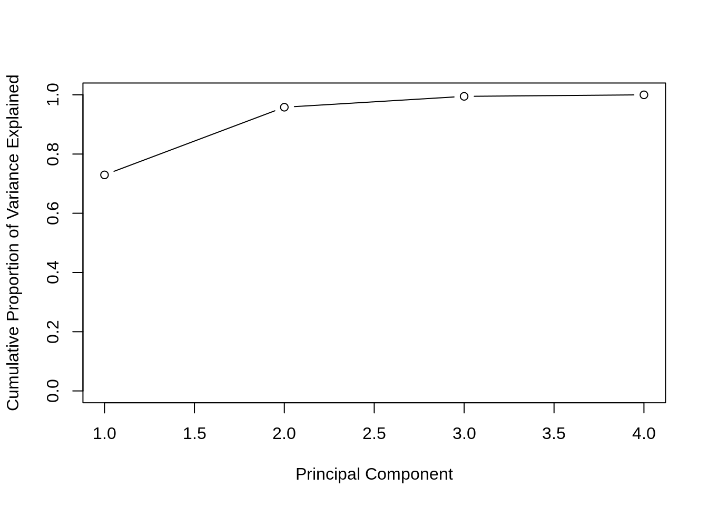
iris_kmeans = kmeans(iris[,-5], centers = 3, nstart = 10)
table(iris_kmeans$clust, iris[,5])##
## setosa versicolor virginica
## 1 0 48 14
## 2 0 2 36
## 3 50 0 0iris_hc = hclust(dist(scale(iris[,-5])), method = "complete")
iris_cut = cutree(iris_hc , 3)
ColorDendrogram(iris_hc, y = iris_cut,
labels = names(iris_cut),
main = "Iris, Complete Linkage",
branchlength = 1.5)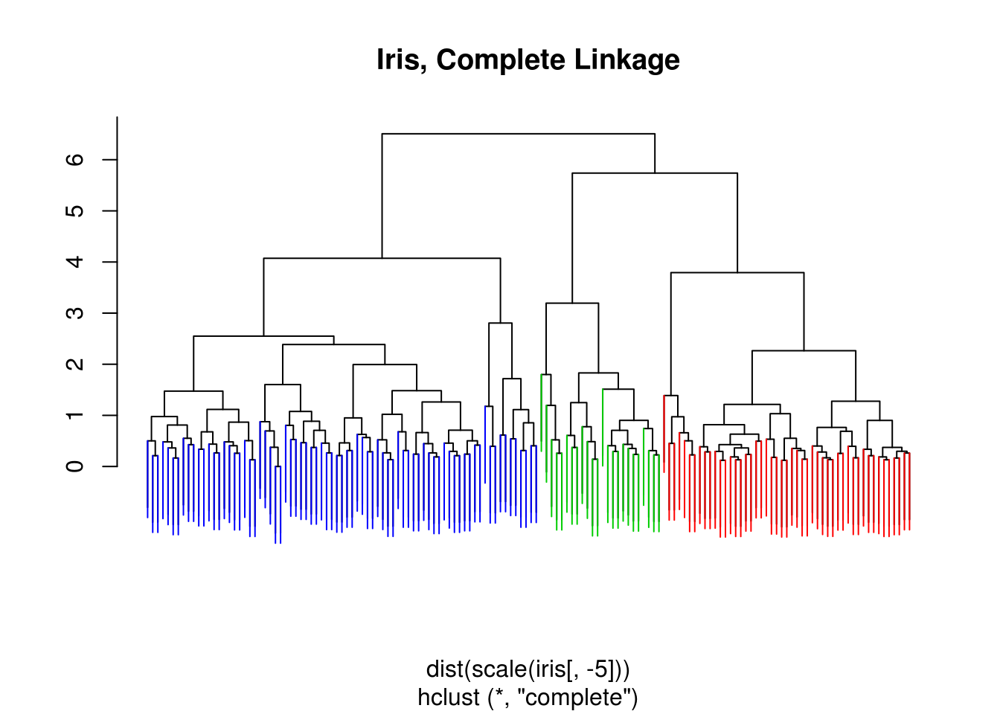
table(iris_cut, iris[,5])##
## iris_cut setosa versicolor virginica
## 1 49 0 0
## 2 1 21 2
## 3 0 29 48table(iris_cut, iris_kmeans$clust)##
## iris_cut 1 2 3
## 1 0 0 49
## 2 23 0 1
## 3 39 38 0iris_hc = hclust(dist(scale(iris[,-5])), method = "single")
iris_cut = cutree(iris_hc , 3)
ColorDendrogram(iris_hc, y = iris_cut,
labels = names(iris_cut),
main = "Iris, Single Linkage",
branchlength = 0.3)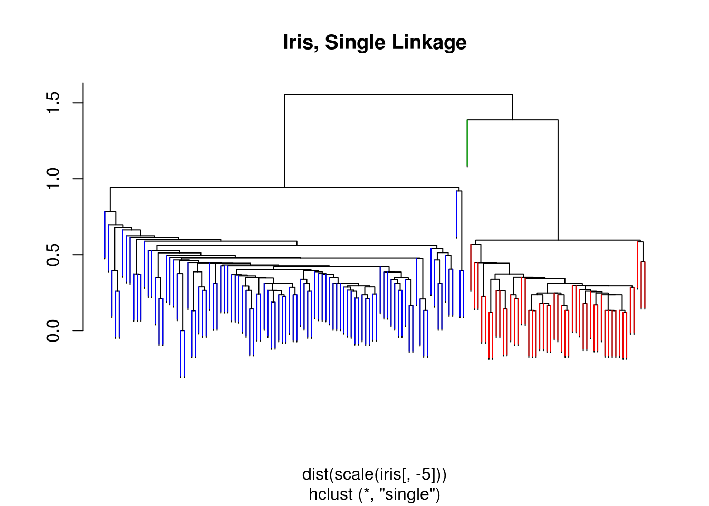
iris_hc = hclust(dist(scale(iris[,-5])), method = "average")
iris_cut = cutree(iris_hc , 3)
ColorDendrogram(iris_hc, y = iris_cut,
labels = names(iris_cut),
main = "Iris, Average Linkage",
branchlength = 1)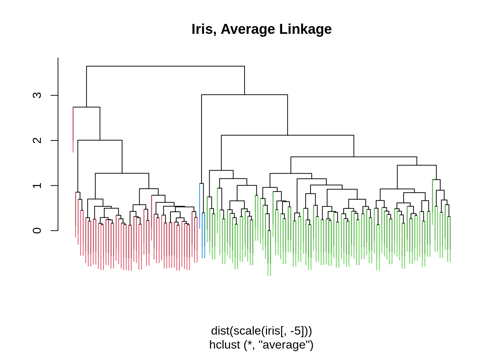
13.3 External Links
- Hierarchical Cluster Analysis on Famous Data Sets - Using the
dendextendpackage for in depth hierarchical cluster - K-means Clustering is Not a Free Lunch - Comments on the assumptions made by \(K\)-means clustering.
- Principal Component Analysis - Explained Visually - Interactive PCA visualizations.
13.4 RMarkdown
The RMarkdown file for this chapter can be found here. The file was created using R version 3.4.1 and the following packages:
- Base Packages, Attached
## [1] "methods" "stats" "graphics" "grDevices" "utils" "datasets"
## [7] "base"- Additional Packages, Attached
## [1] "sparcl" "MASS" "mlbench" "caret" "ggplot2" "lattice" "ISLR"- Additional Packages, Not Attached
## [1] "reshape2" "kernlab" "purrr" "splines"
## [5] "colorspace" "stats4" "htmltools" "yaml"
## [9] "survival" "prodlim" "rlang" "e1071"
## [13] "ModelMetrics" "withr" "glue" "bindrcpp"
## [17] "foreach" "plyr" "bindr" "dimRed"
## [21] "lava" "robustbase" "stringr" "timeDate"
## [25] "munsell" "gtable" "recipes" "codetools"
## [29] "evaluate" "knitr" "class" "DEoptimR"
## [33] "Rcpp" "scales" "backports" "ipred"
## [37] "CVST" "digest" "stringi" "bookdown"
## [41] "dplyr" "RcppRoll" "ddalpha" "grid"
## [45] "rprojroot" "tools" "magrittr" "lazyeval"
## [49] "tibble" "DRR" "pkgconfig" "Matrix"
## [53] "lubridate" "gower" "assertthat" "rmarkdown"
## [57] "iterators" "R6" "rpart" "nnet"
## [61] "nlme" "compiler"